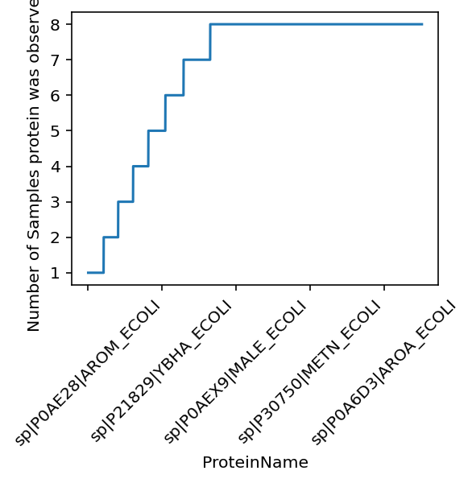
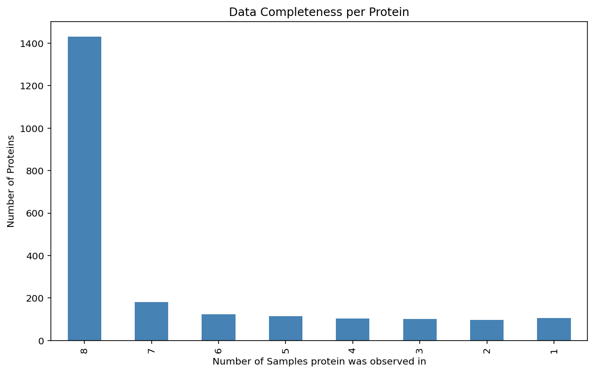
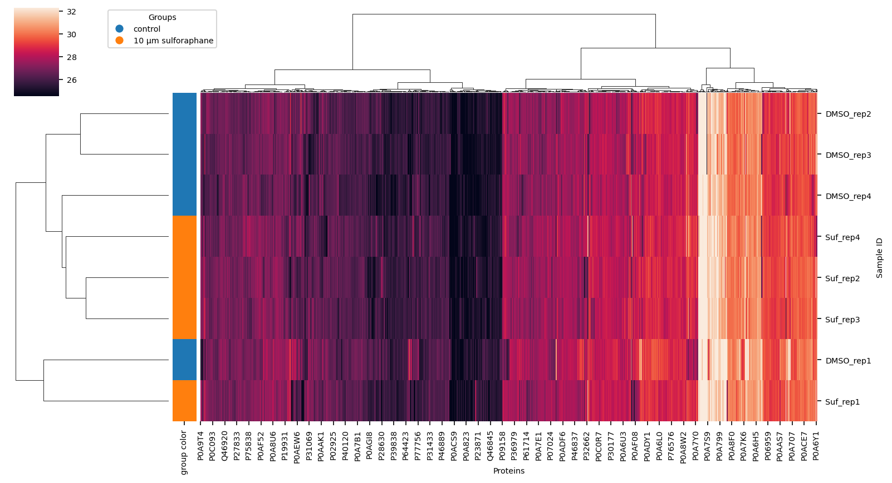
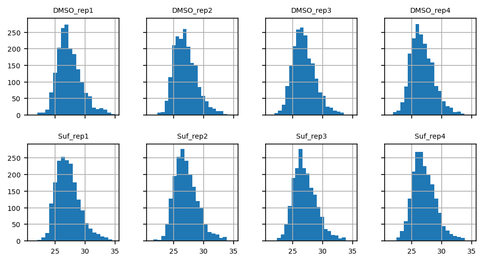
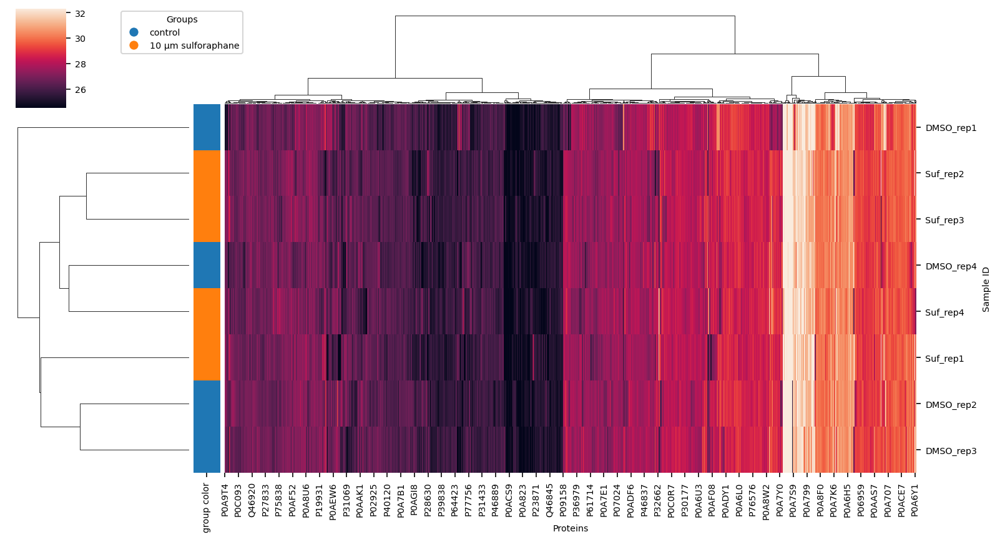
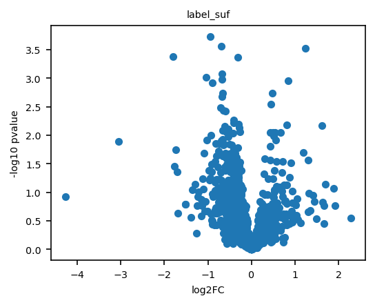

Data Analysis PXD040621#
Plan
read data and log2 transform intensity values
aggregate peptide intensities to protein intensities
format data from long to wide format
remove contaminant proteins
check for missing values
Clustermap of sample and proteins
differential analysis (Volcano Plots)
Enrichment Analysis
check for maltose update pathway (Fig. 3 in paper)
from pathlib import Path
import acore.differential_regulation
import acore.enrichment_analysis
import acore.normalization
import matplotlib.pyplot as plt
import numpy as np
import pandas as pd
import plotly.express as px
import scipy.stats
import seaborn as sns
import vuecore
from acore.io.uniprot import fetch_annotations, process_annotations
from vuecore.viz import get_enrichment_plots
Read in the data#
file_in: input file with the quantified peptide data in MSstats format as provided by quantms
The file can be downloaded from Google Drive
file_in = "data/PXD040621/processed/PXD040621.sdrf_openms_design_msstats_in.csv"
df = pd.read_csv(file_in, sep=",", header=0) # .set_index([])
df.head()
| ProteinName | PeptideSequence | PrecursorCharge | FragmentIon | ProductCharge | IsotopeLabelType | Condition | BioReplicate | Run | Intensity | Reference | |
|---|---|---|---|---|---|---|---|---|---|---|---|
| 0 | sp|P00959|SYM_ECOLI | AAAAPVTGPLADDPIQETITFDDFAK | 2 | NaN | 0 | L | Control | 1 | 1 | 201,065,600.000 | 20220830_JL-4884_Forster_Ecoli_DMSO_rep1_EG-1.... |
| 1 | sp|P00959|SYM_ECOLI | AAAAPVTGPLADDPIQETITFDDFAK | 2 | NaN | 0 | L | Control | 2 | 2 | 74,844,780.000 | 20220830_JL-4884_Forster_Ecoli_DMSO_rep2_EG-2.... |
| 2 | sp|P00959|SYM_ECOLI | AAAAPVTGPLADDPIQETITFDDFAK | 2 | NaN | 0 | L | Control | 3 | 3 | 67,591,410.000 | 20220830_JL-4884_Forster_Ecoli_DMSO_rep3_EG-3.... |
| 3 | sp|P00959|SYM_ECOLI | AAAAPVTGPLADDPIQETITFDDFAK | 2 | NaN | 0 | L | Control | 4 | 4 | 76,388,800.000 | 20220830_JL-4884_Forster_Ecoli_DMSO_rep4_EG-4.... |
| 4 | sp|P00959|SYM_ECOLI | AAAAPVTGPLADDPIQETITFDDFAK | 2 | NaN | 0 | L | Sulforaphane | 5 | 5 | 116,247,100.000 | 20220830_JL-4884_Forster_Ecoli_Suf_rep1_EG-5.mzML |
define the output folder for our VueGen report which we will create later
out_dir = "data/PXD040621/report/"
out_dir = Path(out_dir)
out_dir.mkdir(parents=True, exist_ok=True)
We have the following columns in the data:
cols = [
"ProteinName",
"PeptideSequence",
"PrecursorCharge",
"FragmentIon",
"ProductCharge",
"IsotopeLabelType",
"Condition",
"BioReplicate",
"Run",
"Intensity",
"Reference",
]
Log2 transform the intensity values#
log2 transformations are common for lognormal distributed data
df["Intensity"] = np.log2(df["Intensity"].astype(float))
df.head()
| ProteinName | PeptideSequence | PrecursorCharge | FragmentIon | ProductCharge | IsotopeLabelType | Condition | BioReplicate | Run | Intensity | Reference | |
|---|---|---|---|---|---|---|---|---|---|---|---|
| 0 | sp|P00959|SYM_ECOLI | AAAAPVTGPLADDPIQETITFDDFAK | 2 | NaN | 0 | L | Control | 1 | 1 | 27.583 | 20220830_JL-4884_Forster_Ecoli_DMSO_rep1_EG-1.... |
| 1 | sp|P00959|SYM_ECOLI | AAAAPVTGPLADDPIQETITFDDFAK | 2 | NaN | 0 | L | Control | 2 | 2 | 26.157 | 20220830_JL-4884_Forster_Ecoli_DMSO_rep2_EG-2.... |
| 2 | sp|P00959|SYM_ECOLI | AAAAPVTGPLADDPIQETITFDDFAK | 2 | NaN | 0 | L | Control | 3 | 3 | 26.010 | 20220830_JL-4884_Forster_Ecoli_DMSO_rep3_EG-3.... |
| 3 | sp|P00959|SYM_ECOLI | AAAAPVTGPLADDPIQETITFDDFAK | 2 | NaN | 0 | L | Control | 4 | 4 | 26.187 | 20220830_JL-4884_Forster_Ecoli_DMSO_rep4_EG-4.... |
| 4 | sp|P00959|SYM_ECOLI | AAAAPVTGPLADDPIQETITFDDFAK | 2 | NaN | 0 | L | Sulforaphane | 5 | 5 | 26.793 | 20220830_JL-4884_Forster_Ecoli_Suf_rep1_EG-5.mzML |
Exploratory and Data Quality Plots (peptide level)#
df[“BioReplicate”] = df[“BioReplicate”].replace({5: 1, 6: 2, 7: 3, 8: 4}) fg = sns.displot( data=df.rename(columns={“BioReplicate”: “Rep”, “Condition”: “C.”}), x=”Intensity”, col=”C.”, row=”Rep”, # hue=”Reactor_ID”, kind=”kde”, height=2, aspect=1.1, )
Aggregate the peptide intensities to protein intensities#
we use the median of the peptide intensities for each protein
There are more sophisticated ways to do this, e.g. using MaxLFQ, iBAQ, FlashLFQ, DirectLFQ, etc.
shorten sample name for readability
proteins = (
df.groupby(["ProteinName", "Reference"])["Intensity"].median().unstack(level=0)
)
proteins.index = proteins.index.str.split("_").str[4:6].str.join("_")
proteins
| ProteinName | CON_A2AB72 | CON_O76013 | CON_P00761 | CON_P01966 | CON_P02070 | CON_P02533 | CON_P02538 | CON_P02662 | CON_P02663 | CON_P02666 | ... | sp|Q47319|TAPT_ECOLI | sp|Q47536|YAIP_ECOLI | sp|Q47622|SAPA_ECOLI | sp|Q47679|YAFV_ECOLI | sp|Q47710|YQJK_ECOLI | sp|Q57261|TRUD_ECOLI | sp|Q59385-2|COPA_ECOLI | sp|Q59385|COPA_ECOLI | sp|Q7DFV3|YMGG_ECOLI | sp|Q93K97|ADPP_ECOLI |
|---|---|---|---|---|---|---|---|---|---|---|---|---|---|---|---|---|---|---|---|---|---|
| Reference | |||||||||||||||||||||
| DMSO_rep1 | NaN | NaN | 31.056 | NaN | 26.929 | 28.336 | 25.828 | NaN | 26.804 | NaN | ... | NaN | NaN | 25.638 | NaN | 27.038 | 28.411 | 23.555 | 27.640 | 28.513 | 27.223 |
| DMSO_rep2 | 23.997 | 25.647 | 29.515 | 25.711 | NaN | 25.595 | 26.210 | NaN | 27.593 | NaN | ... | NaN | NaN | NaN | NaN | 26.841 | 27.941 | 25.240 | 27.244 | 27.621 | 25.331 |
| DMSO_rep3 | NaN | NaN | 33.670 | NaN | NaN | 26.992 | 25.441 | 28.129 | 28.895 | 27.111 | ... | NaN | NaN | 24.576 | NaN | 26.609 | 27.070 | NaN | 27.525 | 27.679 | 24.399 |
| DMSO_rep4 | NaN | NaN | 34.139 | NaN | NaN | 27.205 | 26.093 | NaN | 27.764 | NaN | ... | NaN | NaN | 25.945 | 23.902 | 27.164 | 26.680 | 22.524 | 27.404 | 27.256 | 25.767 |
| Suf_rep1 | NaN | NaN | 34.541 | NaN | NaN | NaN | 24.442 | NaN | 25.938 | NaN | ... | NaN | NaN | 25.836 | NaN | 26.819 | 27.995 | NaN | 27.499 | 28.090 | 25.956 |
| Suf_rep2 | NaN | NaN | 33.175 | NaN | 26.571 | 26.495 | 25.070 | NaN | NaN | NaN | ... | NaN | NaN | NaN | 24.253 | 27.268 | 27.055 | NaN | 27.667 | 27.526 | 25.231 |
| Suf_rep3 | NaN | NaN | 31.799 | NaN | NaN | 26.249 | 28.169 | 23.067 | 26.466 | NaN | ... | 25.463 | NaN | NaN | NaN | 26.022 | 27.313 | NaN | 27.760 | 27.814 | 26.223 |
| Suf_rep4 | NaN | NaN | 33.857 | NaN | NaN | 27.208 | 24.690 | NaN | NaN | NaN | ... | NaN | 24.468 | 24.757 | NaN | 27.071 | 26.670 | NaN | 27.848 | 27.605 | 26.178 |
8 rows × 2295 columns
Remove contaminant proteins#
Remove the contaminant proteins which were added to the fasta file used in the data processing. Contaminant proteins are e.g. creation which gets into the sample from the human skin or hair when the sample is prepared.
These are filtered out as they are most of the time not relevant, but a contamination.
decoy_proteins = proteins.filter(like="CON_", axis=1)
proteins = proteins.drop(decoy_proteins.columns, axis=1)
proteins
| ProteinName | sp|A5A613|YCIY_ECOLI | sp|P00350|6PGD_ECOLI | sp|P00363|FRDA_ECOLI | sp|P00370|DHE4_ECOLI | sp|P00393|NDH_ECOLI | sp|P00448|SODM_ECOLI | sp|P00452|RIR1_ECOLI | sp|P00490|PHSM_ECOLI | sp|P00509|AAT_ECOLI | sp|P00547|KHSE_ECOLI | ... | sp|Q47319|TAPT_ECOLI | sp|Q47536|YAIP_ECOLI | sp|Q47622|SAPA_ECOLI | sp|Q47679|YAFV_ECOLI | sp|Q47710|YQJK_ECOLI | sp|Q57261|TRUD_ECOLI | sp|Q59385-2|COPA_ECOLI | sp|Q59385|COPA_ECOLI | sp|Q7DFV3|YMGG_ECOLI | sp|Q93K97|ADPP_ECOLI |
|---|---|---|---|---|---|---|---|---|---|---|---|---|---|---|---|---|---|---|---|---|---|
| Reference | |||||||||||||||||||||
| DMSO_rep1 | 27.180 | 28.193 | 30.247 | 27.459 | 26.864 | 28.493 | NaN | 27.863 | 29.979 | 26.065 | ... | NaN | NaN | 25.638 | NaN | 27.038 | 28.411 | 23.555 | 27.640 | 28.513 | 27.223 |
| DMSO_rep2 | NaN | 27.926 | 29.995 | 26.873 | 25.613 | 24.901 | NaN | 26.439 | 29.048 | NaN | ... | NaN | NaN | NaN | NaN | 26.841 | 27.941 | 25.240 | 27.244 | 27.621 | 25.331 |
| DMSO_rep3 | NaN | 27.329 | 29.983 | 26.499 | 26.012 | 25.054 | 27.172 | 26.382 | 28.777 | NaN | ... | NaN | NaN | 24.576 | NaN | 26.609 | 27.070 | NaN | 27.525 | 27.679 | 24.399 |
| DMSO_rep4 | NaN | 27.152 | 29.907 | 26.435 | 25.799 | 24.825 | NaN | 26.791 | 29.485 | 25.524 | ... | NaN | NaN | 25.945 | 23.902 | 27.164 | 26.680 | 22.524 | 27.404 | 27.256 | 25.767 |
| Suf_rep1 | NaN | 27.442 | 30.183 | 27.400 | 26.671 | 25.564 | NaN | 27.657 | 29.295 | NaN | ... | NaN | NaN | 25.836 | NaN | 26.819 | 27.995 | NaN | 27.499 | 28.090 | 25.956 |
| Suf_rep2 | NaN | 27.032 | 30.086 | 27.283 | 26.886 | 25.378 | 27.364 | 27.468 | 29.079 | NaN | ... | NaN | NaN | NaN | 24.253 | 27.268 | 27.055 | NaN | 27.667 | 27.526 | 25.231 |
| Suf_rep3 | NaN | 27.815 | 29.904 | 27.114 | 26.750 | 25.398 | 26.062 | 27.541 | 29.234 | 26.265 | ... | 25.463 | NaN | NaN | NaN | 26.022 | 27.313 | NaN | 27.760 | 27.814 | 26.223 |
| Suf_rep4 | NaN | 27.404 | 29.575 | 27.224 | 26.343 | 25.360 | 24.924 | 27.705 | 29.334 | 26.427 | ... | NaN | 24.468 | 24.757 | NaN | 27.071 | 26.670 | NaN | 27.848 | 27.605 | 26.178 |
8 rows × 2256 columns
Create a label for each sample based on the metadata.
we will use a string in the sample name, but you can see how the metadata is organized
meta = df[["Condition", "BioReplicate", "Run", "Reference"]].drop_duplicates()
meta
| Condition | BioReplicate | Run | Reference | |
|---|---|---|---|---|
| 0 | Control | 1 | 1 | 20220830_JL-4884_Forster_Ecoli_DMSO_rep1_EG-1.... |
| 1 | Control | 2 | 2 | 20220830_JL-4884_Forster_Ecoli_DMSO_rep2_EG-2.... |
| 2 | Control | 3 | 3 | 20220830_JL-4884_Forster_Ecoli_DMSO_rep3_EG-3.... |
| 3 | Control | 4 | 4 | 20220830_JL-4884_Forster_Ecoli_DMSO_rep4_EG-4.... |
| 4 | Sulforaphane | 5 | 5 | 20220830_JL-4884_Forster_Ecoli_Suf_rep1_EG-5.mzML |
| 5 | Sulforaphane | 6 | 6 | 20220830_JL-4884_Forster_Ecoli_Suf_rep2_EG-6.mzML |
| 6 | Sulforaphane | 7 | 7 | 20220830_JL-4884_Forster_Ecoli_Suf_rep3_EG-7.mzML |
| 7 | Sulforaphane | 8 | 8 | 20220830_JL-4884_Forster_Ecoli_Suf_rep4_EG-8.mzML |
label_encoding = {0: "control", 1: "10 µm sulforaphane"}
label_suf = pd.Series(
proteins.index.str.contains("Suf_").astype(int),
index=proteins.index,
name="label_suf",
dtype=np.int8,
).map(label_encoding)
label_suf
Reference
DMSO_rep1 control
DMSO_rep2 control
DMSO_rep3 control
DMSO_rep4 control
Suf_rep1 10 µm sulforaphane
Suf_rep2 10 µm sulforaphane
Suf_rep3 10 µm sulforaphane
Suf_rep4 10 µm sulforaphane
Name: label_suf, dtype: object
Plot the data completeness for each protein.#
view_name = "Protein"
out_dir_subsection = out_dir / "1_data" / "completeness"
out_dir_subsection.mkdir(parents=True, exist_ok=True)
view_name = "Protein"
ax = (
proteins.notna()
.sum()
.sort_values()
.plot(
rot=45,
ylabel=f"Number of Samples {view_name.lower()} was observed in",
)
)
ax.get_figure().savefig(
out_dir_subsection / f"data_completeness_step_plot.png",
bbox_inches="tight",
dpi=300,
)

view_name = "Protein"
ax = (
proteins.notna()
.sum()
.value_counts()
.sort_index(ascending=False)
.plot(
kind="bar",
title=f"Data Completeness per {view_name}",
xlabel=f"Number of Samples {view_name.lower()} was observed in",
ylabel=f"Number of {view_name}s",
color="steelblue",
figsize=(10, 6),
)
)
ax.get_figure().savefig(
out_dir_subsection / f"data_completeness_bar_plot.png",
bbox_inches="tight",
dpi=300,
)

# Explode column names to examine split by '|'
proteins_meta = (
proteins.columns.str.split("|", expand=True)
.to_frame()
.dropna(how="any", axis=1)
.reset_index(drop=True)
)
proteins_meta.columns = ["Source", "ProteinName", "GeneName"]
proteins_meta["GeneName"] = proteins_meta["GeneName"].str.split("_").str[0]
proteins_meta.index = proteins.columns
proteins_meta.index.name = "identifier"
proteins_meta
| Source | ProteinName | GeneName | |
|---|---|---|---|
| identifier | |||
| sp|A5A613|YCIY_ECOLI | sp | A5A613 | YCIY |
| sp|P00350|6PGD_ECOLI | sp | P00350 | 6PGD |
| sp|P00363|FRDA_ECOLI | sp | P00363 | FRDA |
| sp|P00370|DHE4_ECOLI | sp | P00370 | DHE4 |
| sp|P00393|NDH_ECOLI | sp | P00393 | NDH |
| ... | ... | ... | ... |
| sp|Q57261|TRUD_ECOLI | sp | Q57261 | TRUD |
| sp|Q59385-2|COPA_ECOLI | sp | Q59385-2 | COPA |
| sp|Q59385|COPA_ECOLI | sp | Q59385 | COPA |
| sp|Q7DFV3|YMGG_ECOLI | sp | Q7DFV3 | YMGG |
| sp|Q93K97|ADPP_ECOLI | sp | Q93K97 | ADPP |
2256 rows × 3 columns
For later in the enrichment analysis let’s replace the protein identifier from the Fasta file with the UNIPROT ID
proteins.columns = proteins_meta["ProteinName"].rename("UniprotID")
proteins
| UniprotID | A5A613 | P00350 | P00363 | P00370 | P00393 | P00448 | P00452 | P00490 | P00509 | P00547 | ... | Q47319 | Q47536 | Q47622 | Q47679 | Q47710 | Q57261 | Q59385-2 | Q59385 | Q7DFV3 | Q93K97 |
|---|---|---|---|---|---|---|---|---|---|---|---|---|---|---|---|---|---|---|---|---|---|
| Reference | |||||||||||||||||||||
| DMSO_rep1 | 27.180 | 28.193 | 30.247 | 27.459 | 26.864 | 28.493 | NaN | 27.863 | 29.979 | 26.065 | ... | NaN | NaN | 25.638 | NaN | 27.038 | 28.411 | 23.555 | 27.640 | 28.513 | 27.223 |
| DMSO_rep2 | NaN | 27.926 | 29.995 | 26.873 | 25.613 | 24.901 | NaN | 26.439 | 29.048 | NaN | ... | NaN | NaN | NaN | NaN | 26.841 | 27.941 | 25.240 | 27.244 | 27.621 | 25.331 |
| DMSO_rep3 | NaN | 27.329 | 29.983 | 26.499 | 26.012 | 25.054 | 27.172 | 26.382 | 28.777 | NaN | ... | NaN | NaN | 24.576 | NaN | 26.609 | 27.070 | NaN | 27.525 | 27.679 | 24.399 |
| DMSO_rep4 | NaN | 27.152 | 29.907 | 26.435 | 25.799 | 24.825 | NaN | 26.791 | 29.485 | 25.524 | ... | NaN | NaN | 25.945 | 23.902 | 27.164 | 26.680 | 22.524 | 27.404 | 27.256 | 25.767 |
| Suf_rep1 | NaN | 27.442 | 30.183 | 27.400 | 26.671 | 25.564 | NaN | 27.657 | 29.295 | NaN | ... | NaN | NaN | 25.836 | NaN | 26.819 | 27.995 | NaN | 27.499 | 28.090 | 25.956 |
| Suf_rep2 | NaN | 27.032 | 30.086 | 27.283 | 26.886 | 25.378 | 27.364 | 27.468 | 29.079 | NaN | ... | NaN | NaN | NaN | 24.253 | 27.268 | 27.055 | NaN | 27.667 | 27.526 | 25.231 |
| Suf_rep3 | NaN | 27.815 | 29.904 | 27.114 | 26.750 | 25.398 | 26.062 | 27.541 | 29.234 | 26.265 | ... | 25.463 | NaN | NaN | NaN | 26.022 | 27.313 | NaN | 27.760 | 27.814 | 26.223 |
| Suf_rep4 | NaN | 27.404 | 29.575 | 27.224 | 26.343 | 25.360 | 24.924 | 27.705 | 29.334 | 26.427 | ... | NaN | 24.468 | 24.757 | NaN | 27.071 | 26.670 | NaN | 27.848 | 27.605 | 26.178 |
8 rows × 2256 columns
And let’s save a table with the data for inspection
proteins_meta.to_csv(out_dir_subsection / "proteins_identifiers.csv")
proteins.to_csv(out_dir_subsection / "proteins.csv")
Hierarchical Clustering of data#
using completely observed data only Find correlations in data
out_dir_subsection = out_dir / "1_data" / "clustermap"
out_dir_subsection.mkdir(parents=True, exist_ok=True)
_group_labels = label_encoding.values()
lut = dict(zip(_group_labels, [f"C{i}" for i in range(len(_group_labels))]))
row_colors = label_suf.map(lut).rename("group color")
row_colors
Reference
DMSO_rep1 C0
DMSO_rep2 C0
DMSO_rep3 C0
DMSO_rep4 C0
Suf_rep1 C1
Suf_rep2 C1
Suf_rep3 C1
Suf_rep4 C1
Name: group color, dtype: object
vuecore.set_font_sizes(7)
cg = sns.clustermap(
proteins.dropna(how="any", axis=1),
method="ward",
row_colors=row_colors,
figsize=(11, 6),
robust=True,
xticklabels=True,
yticklabels=True,
)
fig = cg.figure
cg.ax_heatmap.set_xlabel("Proteins")
cg.ax_heatmap.set_ylabel("Sample ID")
vuecore.select_xticks(cg.ax_heatmap)
handles = [
plt.Line2D([0], [0], marker="o", color="w", markerfacecolor=lut[name], markersize=8)
for name in lut
]
cg.ax_cbar.legend(
handles, _group_labels, title="Groups", loc="lower left", bbox_to_anchor=(2, 0.5)
)
fname = out_dir_subsection / "clustermap_ward.png"
# vuecore.savefig(fig, fname, pdf=True, dpi=600, tight_layout=False)
fig.savefig(
out_dir_subsection / "clustermap_ward.png",
bbox_inches="tight",
dpi=300,
)

Analytical Plots#
data distribution (e.g. histogram)
coefficient of variation (CV)
number of identified proteins per sample
# ToDo: bin width functionaity: bins should match between all plots (see pimms)
ax = proteins.T.hist(layout=(2, 4), bins=20, sharex=True, sharey=True, figsize=(8, 4))

Coefficient of Variation (CV)#
CV = standard deviation / mean
per group
df_cvs = (
proteins.groupby(label_suf) # .join(metadata[grouping])
# .agg(scipy.stats.variation)
.agg([scipy.stats.variation, "mean"]) # .rename_axis(["feat", "stat"], axis=1)
)
df_cvs
| UniprotID | A5A613 | P00350 | P00363 | P00370 | P00393 | ... | Q57261 | Q59385-2 | Q59385 | Q7DFV3 | Q93K97 | ||||||||||
|---|---|---|---|---|---|---|---|---|---|---|---|---|---|---|---|---|---|---|---|---|---|
| variation | mean | variation | mean | variation | mean | variation | mean | variation | mean | ... | variation | mean | variation | mean | variation | mean | variation | mean | variation | mean | |
| label_suf | |||||||||||||||||||||
| 10 µm sulforaphane | NaN | NaN | 0.010 | 27.423 | 0.008 | 29.937 | 0.004 | 27.255 | 0.007 | 26.662 | ... | 0.018 | 27.258 | NaN | NaN | 0.005 | 27.693 | 0.008 | 27.759 | 0.015 | 25.897 |
| control | NaN | 27.180 | 0.015 | 27.650 | 0.004 | 30.033 | 0.015 | 26.817 | 0.018 | 26.072 | ... | 0.025 | 27.525 | NaN | 23.773 | 0.005 | 27.453 | 0.017 | 27.767 | 0.040 | 25.680 |
2 rows × 4512 columns
df_cvs = df_cvs.stack(0, future_stack=True).reset_index().dropna()
df_cvs
| label_suf | UniprotID | variation | mean | |
|---|---|---|---|---|
| 1 | 10 µm sulforaphane | P00350 | 0.010 | 27.423 |
| 2 | 10 µm sulforaphane | P00363 | 0.008 | 29.937 |
| 3 | 10 µm sulforaphane | P00370 | 0.004 | 27.255 |
| 4 | 10 µm sulforaphane | P00393 | 0.007 | 26.662 |
| 5 | 10 µm sulforaphane | P00448 | 0.003 | 25.425 |
| ... | ... | ... | ... | ... |
| 4,506 | control | Q47710 | 0.008 | 26.913 |
| 4,507 | control | Q57261 | 0.025 | 27.525 |
| 4,509 | control | Q59385 | 0.005 | 27.453 |
| 4,510 | control | Q7DFV3 | 0.017 | 27.767 |
| 4,511 | control | Q93K97 | 0.040 | 25.680 |
3118 rows × 4 columns
default_args = dict(
facet_col="label_suf",
# facet_row="Time",
labels={
"label_suf": "group",
"variation": "CV",
},
)
fig = px.scatter(
data_frame=df_cvs,
x="variation",
y="mean",
trendline="ols",
**default_args,
)
fname = "cv_vs_mean"
# ? save
fig
Hierarchical Clustering of normalized data#
using completely observed data only Checkout the recipe on normalization methods.
normalization_method = "median"
X = acore.normalization.normalize_data(
proteins.dropna(how="any", axis=1), normalization_method
)
X
| UniprotID | P00350 | P00363 | P00370 | P00393 | P00448 | P00490 | P00509 | P00550 | P00561 | P00562 | ... | Q46868 | Q46893 | Q46920 | Q46948 | Q47147 | Q47710 | Q57261 | Q59385 | Q7DFV3 | Q93K97 |
|---|---|---|---|---|---|---|---|---|---|---|---|---|---|---|---|---|---|---|---|---|---|
| Reference | |||||||||||||||||||||
| DMSO_rep1 | 27.910 | 29.964 | 27.176 | 26.581 | 28.210 | 27.580 | 29.696 | 26.482 | 26.837 | 27.161 | ... | 29.150 | 27.876 | 26.857 | 26.930 | 26.376 | 26.755 | 28.128 | 27.357 | 28.230 | 26.940 |
| DMSO_rep2 | 28.064 | 30.132 | 27.011 | 25.751 | 25.039 | 26.576 | 29.185 | 26.388 | 26.516 | 26.932 | ... | 29.868 | 27.814 | 26.840 | 27.330 | 26.516 | 26.979 | 28.078 | 27.381 | 27.758 | 25.469 |
| DMSO_rep3 | 27.537 | 30.192 | 26.708 | 26.221 | 25.262 | 26.590 | 28.985 | 27.225 | 26.727 | 27.198 | ... | 29.728 | 28.860 | 26.890 | 27.238 | 26.688 | 26.817 | 27.279 | 27.733 | 27.887 | 24.608 |
| DMSO_rep4 | 27.349 | 30.104 | 26.632 | 25.996 | 25.022 | 26.987 | 29.682 | 26.911 | 26.818 | 26.705 | ... | 28.683 | 28.323 | 27.338 | 27.603 | 26.471 | 27.361 | 26.877 | 27.601 | 27.453 | 25.964 |
| Suf_rep1 | 27.270 | 30.011 | 27.228 | 26.500 | 25.392 | 27.485 | 29.124 | 26.646 | 26.774 | 27.038 | ... | 29.614 | 28.416 | 26.877 | 27.715 | 26.774 | 26.648 | 27.824 | 27.327 | 27.919 | 25.785 |
| Suf_rep2 | 27.012 | 30.066 | 27.263 | 26.866 | 25.358 | 27.449 | 29.059 | 27.316 | 27.143 | 26.767 | ... | 28.963 | 28.562 | 27.086 | 27.488 | 26.621 | 27.249 | 27.035 | 27.647 | 27.506 | 25.211 |
| Suf_rep3 | 27.835 | 29.924 | 27.134 | 26.770 | 25.418 | 27.561 | 29.254 | 27.029 | 26.826 | 27.286 | ... | 29.048 | 28.397 | 27.260 | 27.271 | 26.302 | 26.042 | 27.333 | 27.780 | 27.834 | 26.243 |
| Suf_rep4 | 27.370 | 29.541 | 27.190 | 26.309 | 25.326 | 27.671 | 29.300 | 27.297 | 26.582 | 26.946 | ... | 27.908 | 28.767 | 27.113 | 27.643 | 26.975 | 27.038 | 26.636 | 27.814 | 27.572 | 26.144 |
8 rows × 1431 columns
X.median(axis="columns")
Reference
DMSO_rep1 27.297
DMSO_rep2 27.297
DMSO_rep3 27.297
DMSO_rep4 27.297
Suf_rep1 27.297
Suf_rep2 27.297
Suf_rep3 27.297
Suf_rep4 27.297
dtype: float64
vuecore.set_font_sizes(7)
cg = sns.clustermap(
X,
method="ward",
row_colors=row_colors,
figsize=(11, 6),
robust=True,
xticklabels=True,
yticklabels=True,
)
fig = cg.figure
cg.ax_heatmap.set_xlabel("Proteins")
cg.ax_heatmap.set_ylabel("Sample ID")
vuecore.select_xticks(cg.ax_heatmap)
handles = [
plt.Line2D([0], [0], marker="o", color="w", markerfacecolor=lut[name], markersize=8)
for name in lut
]
cg.ax_cbar.legend(
handles, _group_labels, title="Groups", loc="lower left", bbox_to_anchor=(2, 0.5)
)
fname = out_dir_subsection / "clustermap_ward.png"
# vuecore.savefig(fig, fname, pdf=True, dpi=600, tight_layout=False)
fig.savefig(
out_dir_subsection / f"clustermap_ward_{normalization_method}.png",
bbox_inches="tight",
dpi=300,
)

Differential Regulation#
out_dir_subsection = out_dir / "2_differential_regulation"
out_dir_subsection.mkdir(parents=True, exist_ok=True)
Retain all proteins with at least 3 observations in each group#
this is a requirement for a standard t-test
you could look into imputation methods to fill in missing values)
protein in at least two samples per group?
missing all in one condition?
Let’s not impute, but filter for proteins with at least 3 observations in each group
group_counts = proteins.groupby(label_suf).count()
group_counts
| UniprotID | A5A613 | P00350 | P00363 | P00370 | P00393 | P00448 | P00452 | P00490 | P00509 | P00547 | ... | Q47319 | Q47536 | Q47622 | Q47679 | Q47710 | Q57261 | Q59385-2 | Q59385 | Q7DFV3 | Q93K97 |
|---|---|---|---|---|---|---|---|---|---|---|---|---|---|---|---|---|---|---|---|---|---|
| label_suf | |||||||||||||||||||||
| 10 µm sulforaphane | 0 | 4 | 4 | 4 | 4 | 4 | 3 | 4 | 4 | 2 | ... | 1 | 1 | 2 | 1 | 4 | 4 | 0 | 4 | 4 | 4 |
| control | 1 | 4 | 4 | 4 | 4 | 4 | 1 | 4 | 4 | 2 | ... | 0 | 0 | 3 | 1 | 4 | 4 | 3 | 4 | 4 | 4 |
2 rows × 2256 columns
Then we can filter the proteins to only those with at least 3 observations in each grou
mask = group_counts.groupby("label_suf").transform(lambda x: x >= 3).all(axis=0)
mask
UniprotID
A5A613 False
P00350 True
P00363 True
P00370 True
P00393 True
...
Q57261 True
Q59385-2 False
Q59385 True
Q7DFV3 True
Q93K97 True
Length: 2256, dtype: bool
view = proteins.loc[:, mask].join(label_suf)
group = "label_suf"
diff_reg = acore.differential_regulation.run_anova(
view,
alpha=0.15,
drop_cols=[],
subject=None,
group=group,
).sort_values("pvalue", ascending=True)
diff_reg["rejected"] = diff_reg["rejected"].astype(bool)
diff_reg.sort_values("pvalue")
| identifier | T-statistics | pvalue | mean_group1 | mean_group2 | std(group1) | std(group2) | log2FC | test | correction | padj | rejected | group1 | group2 | FC | -log10 pvalue | Method | |
|---|---|---|---|---|---|---|---|---|---|---|---|---|---|---|---|---|---|
| 1,663 | Q46835 | -8.146 | 0.000 | 26.723 | 27.677 | 0.194 | 0.058 | -0.954 | t-Test | FDR correction BH | 0.143 | True | control | 10 µm sulforaphane | 0.516 | 3.735 | Unpaired t-test |
| 122 | P08200 | -7.568 | 0.000 | 28.755 | 29.455 | 0.069 | 0.145 | -0.701 | t-Test | FDR correction BH | 0.143 | True | control | 10 µm sulforaphane | 0.615 | 3.558 | Unpaired t-test |
| 1,527 | P75726 | 7.460 | 0.000 | 28.082 | 26.852 | 0.222 | 0.180 | 1.230 | t-Test | FDR correction BH | 0.143 | True | control | 10 µm sulforaphane | 2.345 | 3.524 | Unpaired t-test |
| 40 | P02943 | -7.006 | 0.000 | 26.117 | 27.920 | 0.428 | 0.124 | -1.802 | t-Test | FDR correction BH | 0.143 | True | control | 10 µm sulforaphane | 0.287 | 3.375 | Unpaired t-test |
| 1,103 | P25539 | -6.995 | 0.000 | 26.877 | 27.188 | 0.064 | 0.044 | -0.311 | t-Test | FDR correction BH | 0.143 | True | control | 10 µm sulforaphane | 0.806 | 3.371 | Unpaired t-test |
| ... | ... | ... | ... | ... | ... | ... | ... | ... | ... | ... | ... | ... | ... | ... | ... | ... | ... |
| 557 | P0ABB0 | -0.003 | 0.998 | 31.305 | 31.305 | 0.319 | 0.051 | -0.001 | t-Test | FDR correction BH | 0.999 | False | control | 10 µm sulforaphane | 1.000 | 0.001 | Unpaired t-test |
| 401 | P0A910 | 0.003 | 0.998 | 31.854 | 31.850 | 1.709 | 1.471 | 0.003 | t-Test | FDR correction BH | 0.999 | False | control | 10 µm sulforaphane | 1.002 | 0.001 | Unpaired t-test |
| 28 | P00961 | -0.002 | 0.998 | 28.958 | 28.959 | 0.426 | 0.262 | -0.001 | t-Test | FDR correction BH | 0.999 | False | control | 10 µm sulforaphane | 1.000 | 0.001 | Unpaired t-test |
| 452 | P0A9L3 | -0.002 | 0.998 | 30.452 | 30.453 | 0.433 | 0.106 | -0.001 | t-Test | FDR correction BH | 0.999 | False | control | 10 µm sulforaphane | 1.000 | 0.001 | Unpaired t-test |
| 87 | P06986 | 0.000 | 1.000 | 25.755 | 25.754 | 1.050 | 1.253 | 0.000 | t-Test | FDR correction BH | 1.000 | False | control | 10 µm sulforaphane | 1.000 | 0.000 | Unpaired t-test |
1681 rows × 17 columns
diff_reg.sort_values("pvalue").head(20)
| identifier | T-statistics | pvalue | mean_group1 | mean_group2 | std(group1) | std(group2) | log2FC | test | correction | padj | rejected | group1 | group2 | FC | -log10 pvalue | Method | |
|---|---|---|---|---|---|---|---|---|---|---|---|---|---|---|---|---|---|
| 1,663 | Q46835 | -8.146 | 0.000 | 26.723 | 27.677 | 0.194 | 0.058 | -0.954 | t-Test | FDR correction BH | 0.143 | True | control | 10 µm sulforaphane | 0.516 | 3.735 | Unpaired t-test |
| 122 | P08200 | -7.568 | 0.000 | 28.755 | 29.455 | 0.069 | 0.145 | -0.701 | t-Test | FDR correction BH | 0.143 | True | control | 10 µm sulforaphane | 0.615 | 3.558 | Unpaired t-test |
| 1,527 | P75726 | 7.460 | 0.000 | 28.082 | 26.852 | 0.222 | 0.180 | 1.230 | t-Test | FDR correction BH | 0.143 | True | control | 10 µm sulforaphane | 2.345 | 3.524 | Unpaired t-test |
| 40 | P02943 | -7.006 | 0.000 | 26.117 | 27.920 | 0.428 | 0.124 | -1.802 | t-Test | FDR correction BH | 0.143 | True | control | 10 µm sulforaphane | 0.287 | 3.375 | Unpaired t-test |
| 1,103 | P25539 | -6.995 | 0.000 | 26.877 | 27.188 | 0.064 | 0.044 | -0.311 | t-Test | FDR correction BH | 0.143 | True | control | 10 µm sulforaphane | 0.806 | 3.371 | Unpaired t-test |
| 1,213 | P33018 | -8.401 | 0.001 | NaN | 25.362 | NaN | 0.112 | NaN | t-Test | FDR correction BH | 0.182 | False | control | 10 µm sulforaphane | NaN | 3.143 | Unpaired t-test |
| 1,443 | P62768 | -6.152 | 0.001 | 28.999 | 29.677 | 0.147 | 0.122 | -0.678 | t-Test | FDR correction BH | 0.182 | False | control | 10 µm sulforaphane | 0.625 | 3.073 | Unpaired t-test |
| 1,105 | P25665 | -6.015 | 0.001 | 26.676 | 27.714 | 0.061 | 0.293 | -1.038 | t-Test | FDR correction BH | 0.182 | False | control | 10 µm sulforaphane | 0.487 | 3.021 | Unpaired t-test |
| 1,493 | P68066 | -5.897 | 0.001 | 31.539 | 32.216 | 0.105 | 0.169 | -0.678 | t-Test | FDR correction BH | 0.182 | False | control | 10 µm sulforaphane | 0.625 | 2.976 | Unpaired t-test |
| 577 | P0ABK9 | 5.844 | 0.001 | 26.482 | 25.637 | 0.166 | 0.187 | 0.845 | t-Test | FDR correction BH | 0.182 | False | control | 10 µm sulforaphane | 1.796 | 2.956 | Unpaired t-test |
| 576 | P0ABK5 | -5.765 | 0.001 | 29.622 | 30.524 | 0.252 | 0.100 | -0.902 | t-Test | FDR correction BH | 0.182 | False | control | 10 µm sulforaphane | 0.535 | 2.925 | Unpaired t-test |
| 1,094 | P25437 | -5.303 | 0.002 | 29.088 | 29.744 | 0.183 | 0.112 | -0.657 | t-Test | FDR correction BH | 0.237 | False | control | 10 µm sulforaphane | 0.634 | 2.739 | Unpaired t-test |
| 1,258 | P36943 | 5.298 | 0.002 | 28.845 | 28.375 | 0.077 | 0.133 | 0.470 | t-Test | FDR correction BH | 0.237 | False | control | 10 µm sulforaphane | 1.386 | 2.737 | Unpaired t-test |
| 550 | P0AB80 | -5.149 | 0.002 | 28.177 | 28.853 | 0.205 | 0.098 | -0.675 | t-Test | FDR correction BH | 0.254 | False | control | 10 µm sulforaphane | 0.626 | 2.674 | Unpaired t-test |
| 956 | P11349 | 4.853 | 0.003 | 27.360 | 26.919 | 0.142 | 0.068 | 0.441 | t-Test | FDR correction BH | 0.319 | False | control | 10 µm sulforaphane | 1.357 | 2.546 | Unpaired t-test |
| 81 | P06721 | -4.719 | 0.003 | 25.529 | 26.244 | 0.198 | 0.172 | -0.715 | t-Test | FDR correction BH | 0.343 | False | control | 10 µm sulforaphane | 0.609 | 2.487 | Unpaired t-test |
| 607 | P0AC33 | -4.615 | 0.004 | 26.752 | 27.403 | 0.201 | 0.140 | -0.652 | t-Test | FDR correction BH | 0.351 | False | control | 10 µm sulforaphane | 0.636 | 2.440 | Unpaired t-test |
| 334 | P0A898 | -4.584 | 0.004 | 27.014 | 27.611 | 0.212 | 0.077 | -0.598 | t-Test | FDR correction BH | 0.351 | False | control | 10 µm sulforaphane | 0.661 | 2.426 | Unpaired t-test |
| 1,576 | P76194 | 5.761 | 0.005 | NaN | NaN | NaN | NaN | NaN | t-Test | FDR correction BH | 0.398 | False | control | 10 µm sulforaphane | NaN | 2.346 | Unpaired t-test |
| 1,530 | P75745 | -4.240 | 0.005 | 26.049 | 26.454 | 0.083 | 0.143 | -0.406 | t-Test | FDR correction BH | 0.402 | False | control | 10 µm sulforaphane | 0.755 | 2.264 | Unpaired t-test |
diff_reg.plot(x="log2FC", y="-log10 pvalue", kind="scatter", title=group)
<Axes: title={'center': 'label_suf'}, xlabel='log2FC', ylabel='-log10 pvalue'>

Interactive Volcano Plot#
str_cols = diff_reg.dtypes[diff_reg.dtypes == "object"].index.tolist()
hover_data = {
"rejected": ":.0f",
**{
c: ":.4f"
for c in [
"padj",
"FC",
]
},
**{c: True for c in str_cols},
}
fig = px.scatter(
diff_reg,
x="log2FC",
y="-log10 pvalue",
color="rejected",
hover_data=hover_data,
width=1200,
height=800,
title=f"Volcano plot for {view_name}s",
)
fig
Save result to subsection folder
fig.write_json(
out_dir_subsection / "0_volcano_plot.json",
pretty=False,
)
diff_reg.to_csv(out_dir_subsection / "1_differential_regulation.csv")
Enrichment Analysis#
out_dir_subsection = out_dir / "uniprot_annotations"
out_dir_subsection.mkdir(parents=True, exist_ok=True)
Fetch the annotations from UniProt API.#
fname_annotations = out_dir_subsection / "annotations.csv"
try:
annotations = pd.read_csv(fname_annotations, index_col=0)
print(f"Loaded annotations from {fname_annotations}")
except FileNotFoundError:
print(f"Fetching annotations for {proteins.columns.size} UniProt IDs.")
FIELDS = "go_p,go_c,go_f"
annotations = fetch_annotations(proteins.columns, fields=FIELDS)
annotations = process_annotations(annotations, fields=FIELDS)
# cache the annotations
fname_annotations.parent.mkdir(exist_ok=True, parents=True)
annotations.to_csv(fname_annotations, index=True)
annotations
Fetching annotations for 2256 UniProt IDs.
Fetched: 500 / 2256
Fetched: 1000 / 2256
Fetched: 1500 / 2256
Fetched: 2000 / 2256
Fetched: 2256 / 2256
| identifier | source | annotation | |
|---|---|---|---|
| 3 | P00350 | Gene Ontology (biological process) | D-gluconate metabolic process [GO:0019521] |
| 4 | P00350 | Gene Ontology (cellular component) | cytosol [GO:0005829] |
| 5 | P00350 | Gene Ontology (molecular function) | guanosine tetraphosphate binding [GO:0097216] |
| 6 | P00350 | Gene Ontology (molecular function) | identical protein binding [GO:0042802] |
| 7 | P00350 | Gene Ontology (molecular function) | NADP binding [GO:0050661] |
| ... | ... | ... | ... |
| 15,960 | Q93K97 | Gene Ontology (molecular function) | magnesium ion binding [GO:0000287] |
| 15,961 | Q93K97 | Gene Ontology (molecular function) | protein homodimerization activity [GO:0042803] |
| 15,962 | Q93K97 | Gene Ontology (molecular function) | pyrophosphatase activity [GO:0016462] |
| 15,963 | Q93K97 | Gene Ontology (biological process) | response to heat [GO:0009408] |
| 15,964 | Q93K97 | Gene Ontology (biological process) | ribose phosphate metabolic process [GO:0019693] |
14974 rows × 3 columns
Run the enrichment analysis#
background is the set of identified proteins in the experiment (not the whole proteome of the organisim, here E. coli)
The enrichment is performed separately for the up- and down-regulated proteins (‘rejected’), which are few in our example where we had to set the adjusted p-value to 0.15.
In the enrichment we set the cutoff for the adjusted p-value to 0.2, which is a bit arbitrary to see some results.
enriched = acore.enrichment_analysis.run_up_down_regulation_enrichment(
regulation_data=diff_reg,
annotation=annotations,
min_detected_in_set=1,
lfc_cutoff=1,
pval_col="padj", # toggle if it does not work
correction_alpha=0.2, # adjust the p-value to see more or less results
)
enriched
| terms | identifiers | foreground | background | foreground_pop | background_pop | pvalue | padj | rejected | direction | comparison | |
|---|---|---|---|---|---|---|---|---|---|---|---|
| 0 | citrate CoA-transferase activity [GO:0008814] | P75726 | 1 | 0 | 1 | 1,681 | 0.001 | 0.002 | True | upregulated | control~10 µm sulforaphane |
| 1 | citrate metabolic process [GO:0006101] | P75726 | 1 | 2 | 1 | 1,681 | 0.002 | 0.002 | True | upregulated | control~10 µm sulforaphane |
| 3 | ATP-independent citrate lyase complex [GO:0009... | P75726 | 1 | 2 | 1 | 1,681 | 0.002 | 0.002 | True | upregulated | control~10 µm sulforaphane |
| 4 | acetyl-CoA metabolic process [GO:0006084] | P75726 | 1 | 2 | 1 | 1,681 | 0.002 | 0.002 | True | upregulated | control~10 µm sulforaphane |
| 5 | citrate (pro-3S)-lyase activity [GO:0008815] | P75726 | 1 | 1 | 1 | 1,681 | 0.001 | 0.002 | True | upregulated | control~10 µm sulforaphane |
| 2 | cytoplasm [GO:0005737] | P75726 | 1 | 30 | 1 | 1,681 | 0.018 | 0.018 | True | upregulated | control~10 µm sulforaphane |
| 1 | maltodextrin transmembrane transporter activi... | P02943 | 1 | 0 | 2 | 1,681 | 0.001 | 0.004 | True | downregulated | control~10 µm sulforaphane |
| 2 | maltose transmembrane transport [GO:1904981] | P02943 | 1 | 0 | 2 | 1,681 | 0.001 | 0.004 | True | downregulated | control~10 µm sulforaphane |
| 3 | maltose transmembrane transporter activity [G... | P02943 | 1 | 0 | 2 | 1,681 | 0.001 | 0.004 | True | downregulated | control~10 µm sulforaphane |
| 4 | maltose transporting porin activity [GO:0015481] | P02943 | 1 | 0 | 2 | 1,681 | 0.001 | 0.004 | True | downregulated | control~10 µm sulforaphane |
| 10 | polysaccharide transport [GO:0015774] | P02943 | 1 | 0 | 2 | 1,681 | 0.001 | 0.004 | True | downregulated | control~10 µm sulforaphane |
| 16 | 5-methyltetrahydropteroyltriglutamate-homocyst... | P25665 | 1 | 0 | 2 | 1,681 | 0.001 | 0.004 | True | downregulated | control~10 µm sulforaphane |
| 14 | virus receptor activity [GO:0001618] | P02943 | 1 | 1 | 2 | 1,681 | 0.002 | 0.005 | True | downregulated | control~10 µm sulforaphane |
| 0 | maltodextrin transmembrane transport [GO:0042... | P02943 | 1 | 1 | 2 | 1,681 | 0.002 | 0.005 | True | downregulated | control~10 µm sulforaphane |
| 18 | carbohydrate transmembrane transporter activit... | P02943 | 1 | 1 | 2 | 1,681 | 0.002 | 0.005 | True | downregulated | control~10 µm sulforaphane |
| 21 | homocysteine metabolic process [GO:0050667] | P25665 | 1 | 1 | 2 | 1,681 | 0.002 | 0.005 | True | downregulated | control~10 µm sulforaphane |
| 6 | methionine synthase activity [GO:0008705] | P25665 | 1 | 1 | 2 | 1,681 | 0.002 | 0.005 | True | downregulated | control~10 µm sulforaphane |
| 9 | outer membrane protein complex [GO:0106234] | P02943 | 1 | 2 | 2 | 1,681 | 0.004 | 0.006 | True | downregulated | control~10 µm sulforaphane |
| 8 | monoatomic ion transport [GO:0006811] | P02943 | 1 | 2 | 2 | 1,681 | 0.004 | 0.006 | True | downregulated | control~10 µm sulforaphane |
| 13 | tetrahydrofolate interconversion [GO:0035999] | P25665 | 1 | 4 | 2 | 1,681 | 0.006 | 0.009 | True | downregulated | control~10 µm sulforaphane |
| 12 | porin activity [GO:0015288] | P02943 | 1 | 5 | 2 | 1,681 | 0.007 | 0.010 | True | downregulated | control~10 µm sulforaphane |
| 11 | pore complex [GO:0046930] | P02943 | 1 | 5 | 2 | 1,681 | 0.007 | 0.010 | True | downregulated | control~10 µm sulforaphane |
| 5 | methionine biosynthetic process [GO:0009086] | P25665 | 1 | 6 | 2 | 1,681 | 0.008 | 0.011 | True | downregulated | control~10 µm sulforaphane |
| 7 | methylation [GO:0032259] | P25665 | 1 | 7 | 2 | 1,681 | 0.009 | 0.012 | True | downregulated | control~10 µm sulforaphane |
| 19 | cell outer membrane [GO:0009279] | P02943 | 1 | 42 | 2 | 1,681 | 0.051 | 0.058 | True | downregulated | control~10 µm sulforaphane |
| 17 | DNA damage response [GO:0006974] | P02943 | 1 | 51 | 2 | 1,681 | 0.061 | 0.067 | True | downregulated | control~10 µm sulforaphane |
| 15 | zinc ion binding [GO:0008270] | P25665 | 1 | 102 | 2 | 1,681 | 0.119 | 0.124 | True | downregulated | control~10 µm sulforaphane |
| 20 | cytosol [GO:0005829] | P25665 | 1 | 544 | 2 | 1,681 | 0.543 | 0.543 | False | downregulated | control~10 µm sulforaphane |
fig = get_enrichment_plots(
enriched,
identifier="anything", # ToDo: figure out what this does
args=dict(title="Enrichment Analysis"),
)
fig = fig[0]
fig.write_json(
out_dir_subsection / "enrichment_analysis.json",
pretty=True,
)
fig
Check for Maltose Uptake#
out_dir_subsection = out_dir / "3_maltose_uptake"
out_dir_subsection.mkdir(parents=True, exist_ok=True)
apply filtering of ‘differentially abundant proteins’ as described in the paper
Differentially abundant proteins were determined as those with log2 fold-change
1 and < -1, and p < 0.05 This means not multiple testing correction was applied.
view = diff_reg.query("pvalue < 0.05 and FC > 1") # .shape[0]
view.to_csv(
out_dir_subsection / "1_differently_regulated_as_in_paper.csv",
index=False,
)
view
| identifier | T-statistics | pvalue | mean_group1 | mean_group2 | std(group1) | std(group2) | log2FC | test | correction | padj | rejected | group1 | group2 | FC | -log10 pvalue | Method | |
|---|---|---|---|---|---|---|---|---|---|---|---|---|---|---|---|---|---|
| 1,527 | P75726 | 7.460 | 0.000 | 28.082 | 26.852 | 0.222 | 0.180 | 1.230 | t-Test | FDR correction BH | 0.143 | True | control | 10 µm sulforaphane | 2.345 | 3.524 | Unpaired t-test |
| 577 | P0ABK9 | 5.844 | 0.001 | 26.482 | 25.637 | 0.166 | 0.187 | 0.845 | t-Test | FDR correction BH | 0.182 | False | control | 10 µm sulforaphane | 1.796 | 2.956 | Unpaired t-test |
| 1,258 | P36943 | 5.298 | 0.002 | 28.845 | 28.375 | 0.077 | 0.133 | 0.470 | t-Test | FDR correction BH | 0.237 | False | control | 10 µm sulforaphane | 1.386 | 2.737 | Unpaired t-test |
| 956 | P11349 | 4.853 | 0.003 | 27.360 | 26.919 | 0.142 | 0.068 | 0.441 | t-Test | FDR correction BH | 0.319 | False | control | 10 µm sulforaphane | 1.357 | 2.546 | Unpaired t-test |
| 1,305 | P37773 | 4.073 | 0.007 | 27.739 | 26.922 | 0.117 | 0.327 | 0.817 | t-Test | FDR correction BH | 0.402 | False | control | 10 µm sulforaphane | 1.762 | 2.184 | Unpaired t-test |
| 1,537 | P75825 | 4.041 | 0.007 | 26.998 | 25.384 | 0.455 | 0.521 | 1.614 | t-Test | FDR correction BH | 0.402 | False | control | 10 µm sulforaphane | 3.060 | 2.168 | Unpaired t-test |
| 1,322 | P39285 | 3.816 | 0.009 | 24.661 | 24.173 | 0.045 | 0.217 | 0.488 | t-Test | FDR correction BH | 0.402 | False | control | 10 µm sulforaphane | 1.402 | 2.055 | Unpaired t-test |
| 1,190 | P31572 | 3.809 | 0.009 | 25.399 | 24.967 | 0.119 | 0.156 | 0.431 | t-Test | FDR correction BH | 0.402 | False | control | 10 µm sulforaphane | 1.349 | 2.052 | Unpaired t-test |
| 1,275 | P37349 | 3.801 | 0.009 | 25.935 | 25.259 | 0.296 | 0.085 | 0.675 | t-Test | FDR correction BH | 0.402 | False | control | 10 µm sulforaphane | 1.597 | 2.048 | Unpaired t-test |
| 1,594 | P76440 | 3.796 | 0.009 | 27.182 | 26.639 | 0.233 | 0.084 | 0.543 | t-Test | FDR correction BH | 0.402 | False | control | 10 µm sulforaphane | 1.457 | 2.045 | Unpaired t-test |
| 1,616 | P77252 | 3.691 | 0.010 | 26.517 | 26.012 | 0.099 | 0.215 | 0.505 | t-Test | FDR correction BH | 0.428 | False | control | 10 µm sulforaphane | 1.419 | 1.992 | Unpaired t-test |
| 144 | P09152 | 3.536 | 0.012 | 26.841 | 26.290 | 0.222 | 0.153 | 0.552 | t-Test | FDR correction BH | 0.465 | False | control | 10 µm sulforaphane | 1.466 | 1.911 | Unpaired t-test |
| 1,539 | P75829 | 3.332 | 0.016 | 27.617 | 27.180 | 0.137 | 0.181 | 0.437 | t-Test | FDR correction BH | 0.500 | False | control | 10 µm sulforaphane | 1.354 | 1.802 | Unpaired t-test |
| 443 | P0A9I1 | 3.145 | 0.020 | 28.211 | 27.029 | 0.528 | 0.381 | 1.183 | t-Test | FDR correction BH | 0.528 | False | control | 10 µm sulforaphane | 2.270 | 1.700 | Unpaired t-test |
| 47 | P04079 | 2.947 | 0.026 | 29.046 | 28.735 | 0.119 | 0.138 | 0.311 | t-Test | FDR correction BH | 0.548 | False | control | 10 µm sulforaphane | 1.240 | 1.590 | Unpaired t-test |
| 1,336 | P39406 | 2.912 | 0.027 | 27.385 | 26.076 | 0.276 | 0.728 | 1.309 | t-Test | FDR correction BH | 0.555 | False | control | 10 µm sulforaphane | 2.477 | 1.570 | Unpaired t-test |
| 59 | P05020 | 2.900 | 0.027 | 27.923 | 27.493 | 0.138 | 0.216 | 0.430 | t-Test | FDR correction BH | 0.555 | False | control | 10 µm sulforaphane | 1.347 | 1.563 | Unpaired t-test |
| 65 | P05637 | 2.872 | 0.028 | 26.621 | 26.051 | 0.262 | 0.223 | 0.570 | t-Test | FDR correction BH | 0.563 | False | control | 10 µm sulforaphane | 1.484 | 1.548 | Unpaired t-test |
| 1,093 | P25397 | 2.855 | 0.029 | 27.676 | 26.964 | 0.221 | 0.371 | 0.712 | t-Test | FDR correction BH | 0.563 | False | control | 10 µm sulforaphane | 1.638 | 1.538 | Unpaired t-test |
| 1,089 | P24232 | 2.826 | 0.030 | 27.157 | 26.255 | 0.536 | 0.137 | 0.903 | t-Test | FDR correction BH | 0.563 | False | control | 10 µm sulforaphane | 1.869 | 1.521 | Unpaired t-test |
| 119 | P08178 | 2.585 | 0.041 | 26.889 | 26.369 | 0.198 | 0.286 | 0.519 | t-Test | FDR correction BH | 0.604 | False | control | 10 µm sulforaphane | 1.433 | 1.382 | Unpaired t-test |
| 1,520 | P69829 | 2.534 | 0.044 | 26.936 | 26.231 | 0.083 | 0.475 | 0.705 | t-Test | FDR correction BH | 0.605 | False | control | 10 µm sulforaphane | 1.630 | 1.352 | Unpaired t-test |
| 716 | P0ADS9 | 2.493 | 0.047 | 27.321 | 27.032 | 0.101 | 0.173 | 0.288 | t-Test | FDR correction BH | 0.623 | False | control | 10 µm sulforaphane | 1.221 | 1.328 | Unpaired t-test |
Let’s find the proteins highlighted in the volcano plot in Figure 3.
highlighted_genes = ["LamB", "MalE", "Malk", "CitF", "CitT", "CitE", "Frd"]
highlighted_genes = "|".join([p.upper() for p in highlighted_genes])
highlighted_genes = proteins_meta.query(
f"`GeneName`.str.contains('{highlighted_genes}')"
)
highlighted_genes
| Source | ProteinName | GeneName | |
|---|---|---|---|
| identifier | |||
| sp|P00363|FRDA_ECOLI | sp | P00363 | FRDA |
| sp|P02943|LAMB_ECOLI | sp | P02943 | LAMB |
| sp|P0A8Q0|FRDC_ECOLI | sp | P0A8Q0 | FRDC |
| sp|P0A8Q3|FRDD_ECOLI | sp | P0A8Q3 | FRDD |
| sp|P0A9I1|CITE_ECOLI | sp | P0A9I1 | CITE |
| sp|P0AC47|FRDB_ECOLI | sp | P0AC47 | FRDB |
| sp|P0AE74|CITT_ECOLI | sp | P0AE74 | CITT |
| sp|P0AEX9|MALE_ECOLI | sp | P0AEX9 | MALE |
| sp|P68187|MALK_ECOLI | sp | P68187 | MALK |
highlighted_proteins = "|".join([p.upper() for p in highlighted_genes["ProteinName"]])
view = diff_reg.query(f"`identifier`.str.contains('{highlighted_proteins}')")
view = view.set_index("identifier").join(proteins_meta.set_index("ProteinName"))
view.to_csv(
out_dir_subsection / "2_highlighted_proteins_in_figure3.csv",
index=False,
)
sel_cols = [
"identifier",
"GeneName",
"log2FC",
"pvalue",
"padj",
"rejected",
"group1",
"group2",
"Method",
]
view.reset_index()[sel_cols].sort_values("log2FC", ascending=False)
| identifier | GeneName | log2FC | pvalue | padj | rejected | group1 | group2 | Method | |
|---|---|---|---|---|---|---|---|---|---|
| 2 | P0A9I1 | CITE | 1.183 | 0.020 | 0.528 | False | control | 10 µm sulforaphane | Unpaired t-test |
| 3 | P0AE74 | CITT | 0.932 | 0.095 | 0.683 | False | control | 10 µm sulforaphane | Unpaired t-test |
| 4 | P0A8Q0 | FRDC | 0.815 | 0.159 | 0.729 | False | control | 10 µm sulforaphane | Unpaired t-test |
| 5 | P00363 | FRDA | 0.096 | 0.552 | 0.934 | False | control | 10 µm sulforaphane | Unpaired t-test |
| 6 | P0AC47 | FRDB | 0.063 | 0.806 | 0.973 | False | control | 10 µm sulforaphane | Unpaired t-test |
| 1 | P0AEX9 | MALE | -0.403 | 0.006 | 0.402 | False | control | 10 µm sulforaphane | Unpaired t-test |
| 0 | P02943 | LAMB | -1.802 | 0.000 | 0.143 | True | control | 10 µm sulforaphane | Unpaired t-test |
Let’s see their original data
view_proteins = (
(
proteins[highlighted_genes["ProteinName"].to_list()].T.join(
proteins_meta.set_index("ProteinName")["GeneName"]
)
)
.set_index("GeneName", append=True)
.T
) # to check]
view_proteins.to_csv(
out_dir_subsection / "3_highlighted_proteins_in_figure3_intensities.csv",
index=True,
)
view_proteins
| UniprotID | P00363 | P02943 | P0A8Q0 | P0A8Q3 | P0A9I1 | P0AC47 | P0AE74 | P0AEX9 | P68187 |
|---|---|---|---|---|---|---|---|---|---|
| GeneName | FRDA | LAMB | FRDC | FRDD | CITE | FRDB | CITT | MALE | MALK |
| DMSO_rep1 | 30.247 | 26.752 | 30.348 | 27.425 | 29.031 | 31.223 | 27.544 | 27.099 | NaN |
| DMSO_rep2 | 29.995 | 26.012 | 28.815 | 27.061 | 27.933 | 30.947 | 26.364 | 27.038 | NaN |
| DMSO_rep3 | 29.983 | 26.151 | 30.569 | 27.291 | 27.608 | 30.664 | 25.292 | 26.854 | NaN |
| DMSO_rep4 | 29.907 | 25.555 | 29.097 | 24.906 | 28.273 | 30.815 | 26.608 | 27.037 | 26.241 |
| Suf_rep1 | 30.183 | 27.844 | 28.350 | 26.703 | 27.422 | 31.360 | 25.485 | 27.174 | 25.210 |
| Suf_rep2 | 30.086 | 28.095 | 29.444 | NaN | 26.744 | 30.313 | 25.691 | 27.500 | 24.964 |
| Suf_rep3 | 29.904 | 27.971 | 29.172 | NaN | 26.563 | 30.818 | 25.310 | 27.536 | 25.753 |
| Suf_rep4 | 29.575 | 27.769 | 28.602 | 25.294 | 27.386 | 30.907 | 25.594 | 27.433 | 25.838 |
How to explain the differences?